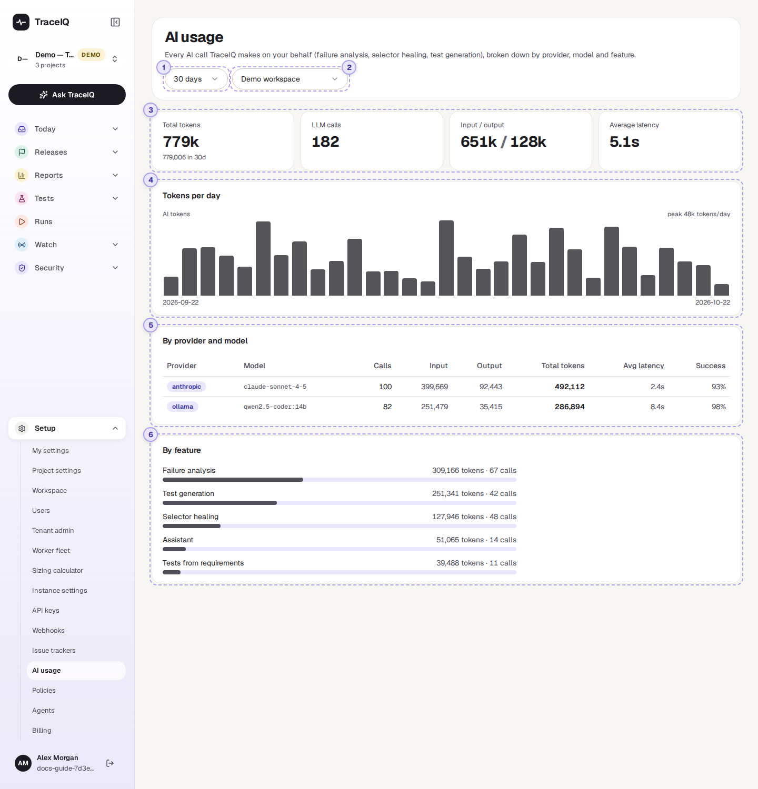
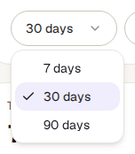
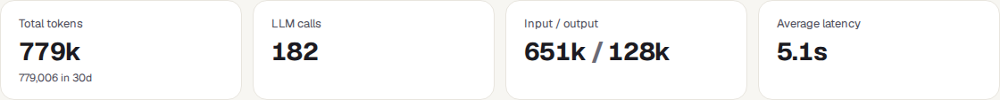
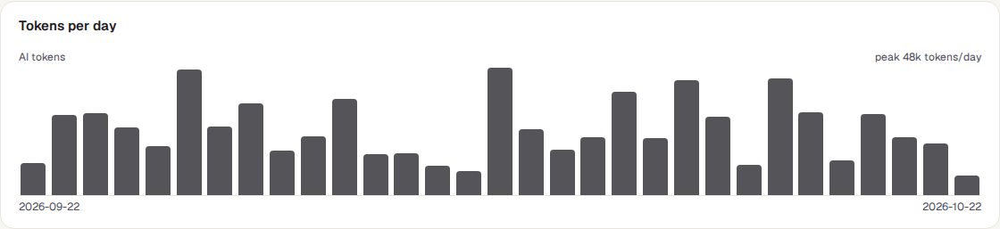
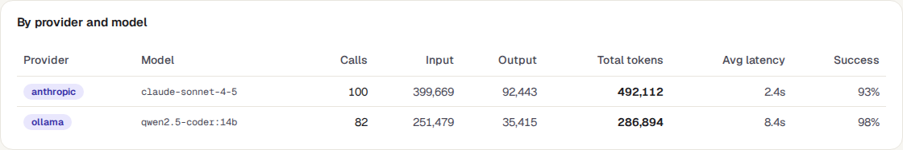
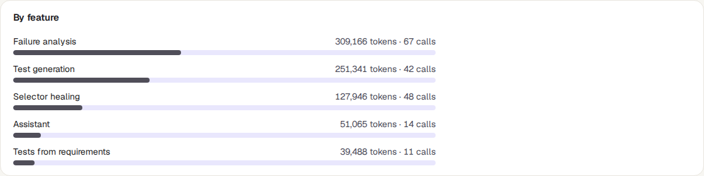

AI usage
TraceIQ uses AI services for a few jobs, such as explaining why a test failed or repairing a test whose button moved. This page counts those calls for one workspace: how many there were, how much text they used, which AI service answered, and which feature asked.
What it is for
AI usage answers "How much AI are we using, and for what?" AI services charge by the amount of text they read and write, and many plans have a monthly limit, so it helps to know where the usage comes from before the bill or the limit arrives.
Workspace admins
See whether the workspace is close to its monthly AI limit, and which feature uses the most.
Leads
Compare AI providers and models: how often their answers came back, and how long they took.
Anyone curious
Check that AI features are actually being used, or that nothing is calling AI when it shouldn't.
Where to find it: in the sidebar, open Setup → AI usage.
- A call is one question TraceIQ sent to an AI service, and its answer.
- A token is a small piece of text, roughly three-quarters of a word. AI services count, and charge, by tokens. Input tokens are what TraceIQ sent (the question, the error, part of the page); output tokens are the answer.
A tour of the screen
The demo workspace has about a month of AI calls, made through two AI services. The numbers on the screenshot match the sections below. ("LLM", large language model, is the technical name for these AI services.)

Time window

How far back to count: the last 7, 30 (the default) or 90 days. The window ends now and is counted in hours, not calendar days: "7 days" is the last 7 × 24 hours.
Workspace
AI usage is counted per workspace. This menu chooses which one. The page opens on the workspace of the project picked in the sidebar.
When the workspace has made no AI calls in the window, the page shows only these two menus and "No LLM calls in the last 30 days" in place of parts ③ to ⑥.
The four totals

| Tile | What the number means |
|---|---|
| Total tokens | Input plus output tokens of every call in the window, shortened (for example 1.2M for 1.2 million). The exact number is underneath. |
| LLM calls | How many calls were made, including ones that failed. |
| Input / output | The same tokens split into what was sent and what came back. |
| Average latency | How long an answer took on average, in milliseconds (ms) or seconds (s). |
Tokens per day

One slot for every day of the window, from the first date on the left to today on the right; the tallest bar is the busiest day, and the top corner names its total. A day without any calls leaves its slot empty. Point at a bar to see its date, tokens and number of calls. Days are calendar days in UTC, so in India a call made before 5:30 a.m. counts towards the previous day.
If the workspace's plan has a monthly AI limit, the top-right corner also shows it, for example "2026-10: 120,000 / 1,000,000 tokens (12%)". That figure is for the current calendar month, whatever time window you picked.
By provider and model

One row per AI service (the provider, as your administrator named it) and model (the particular AI version, such as a "mini" or a "large" one), the most-used first. The columns give calls, input, output and total tokens, and the average wait. Success is the share of calls that got an answer; below 90% it turns peach, which usually means the service was refusing or timing out.
By feature

Which part of TraceIQ asked, with its tokens, calls and a bar showing its share of all tokens, the largest first:
| Feature | What it is |
|---|---|
| Failure analysis | The explanation of why a test failed, on the run page. |
| Selector healing | Repairing a test whose button or field can no longer be found (the "selector" is how a test finds it), during a run or afterwards as a suggestion. |
| Test generation | Writing a draft test from a description. |
| Tests from requirements, Regression tests from incidents | Draft tests written from an imported requirement, or from an incident. |
| Assistant | Questions asked through Ask TraceIQ. |
| Other | Calls that didn't say which feature made them. |
Watch it in use
How to…
…check how close you are to the monthly limit
- Choose the workspace in the menu under the heading.
- Read the top-right corner of Tokens per day. If it shows no figure, the plan has no AI limit.
- To see the plan and its limits, open Setup → Billing.
…find out what is using the most AI
- Choose 30 days or 90 days.
- Look at By feature: the first bar is the biggest user.
- Look at the tallest bars in Tokens per day to see when it happened, for example on a day with many failed runs.
…switch AI off for a workspace
- This page only reports. To stop AI use, a workspace admin opens Setup → Policies and turns off Allow AI features.
- From then on, no new calls appear here for that workspace.
Good to know
- When the monthly limit is used up, TraceIQ stops making AI calls for that workspace until the next calendar month (UTC). The features don't break: they fall back to what they do without AI. The refused calls are listed under Recent denials on the Policies page.
- Calls made by the test machines count too. When a test repairs itself during a run, the machine running it makes the call and reports it; it is counted in the run's workspace.
- Failed calls are counted. They appear in LLM calls and lower the Success rate, even when they used few or no tokens.
- No money is shown here. For costs in your currency, see Costs under Reports (it needs prices set up by your administrator).
- It doesn't update by itself while you look at it. It refreshes when you come back to its browser tab, or when you reload.
- Everyone in the workspace sees the same numbers, for all projects of the workspace together. There is no per-project split on this page.
Related pages
Policies
The next page in this guide: switch AI off for a workspace, and see what TraceIQ refused and why.
Billing
Your plan and its monthly limits, AI tokens included.
Agents
AI agents that use TraceIQ, and the token budget each of their sessions may spend.
Costs
What testing and AI cost in money, per project, when prices are set up.